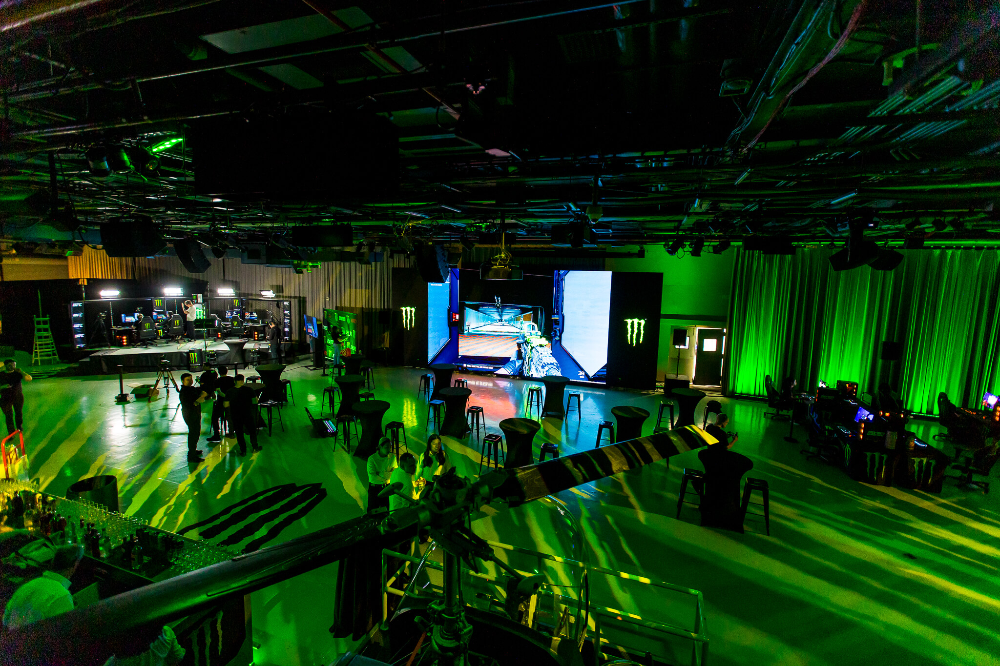
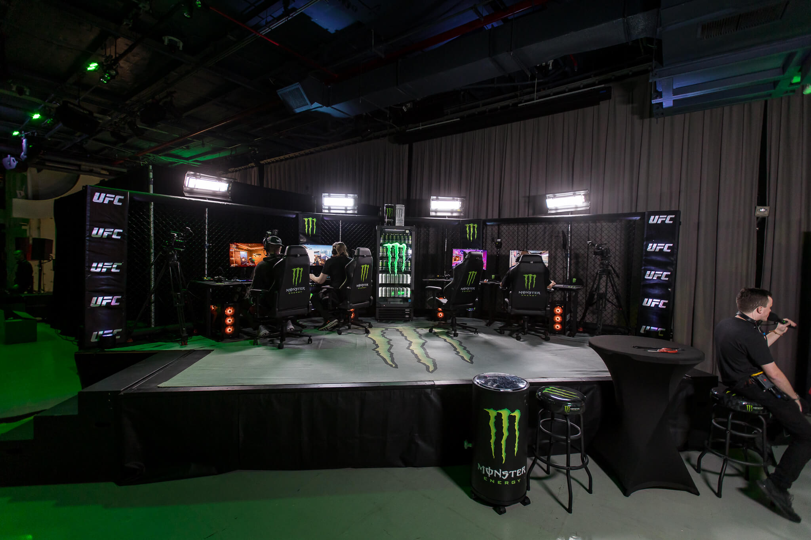
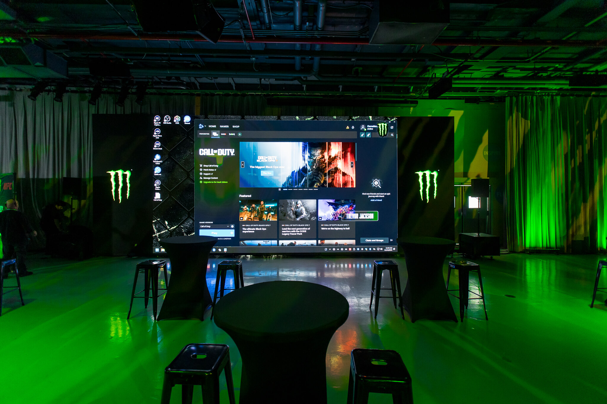

Digital Forge Media (DFM) was commissioned to produce a high-impact live broadcast for the premier launch of Call of Duty: Black Ops 7. Hosted aboard the historic USS Intrepid in New York City, the event served as the official pre-party for a major UFC fight night—bridging the worlds of elite gaming, professional athletics, and creator culture.
DFM orchestrated a high-energy show featuring a diverse roster of personalities including Alex Pereira, HECZ, TeeP, HusKerrs, and Matt Berger.
Operating within a non-traditional venue introduced significant logistical challenges. To solve this, DFM deployed a mobile-first load-in strategy, transporting all broadcast gear via backpacks and Pelican cases.
By eliminating the need for crane lifts and heavy rigging, the team gained critical hours for technical rehearsals and network stress testing—ultimately achieving 100% uptime during the live broadcast.
The production also required seamless integration between internal broadcast systems and venue infrastructure, with close coordination between Monster Energy Events and on-site staff.
The broadcast delivered strong performance across all key metrics:
The result was a seamless, high-energy broadcast that successfully merged gaming, sports, and creator culture into a single premium live experience.


